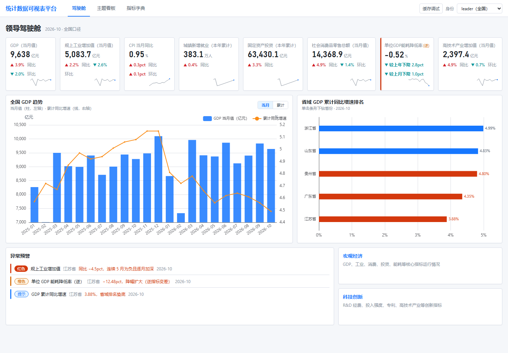
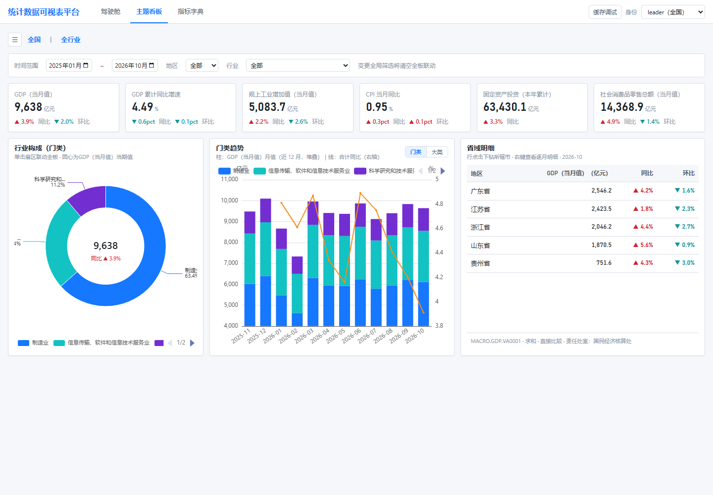
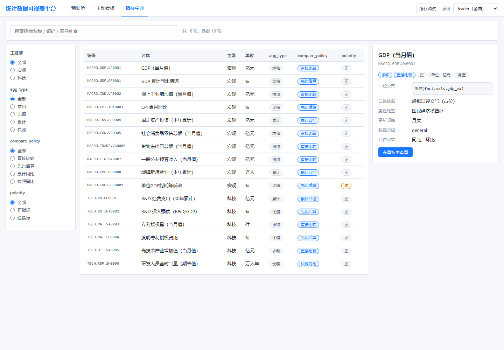
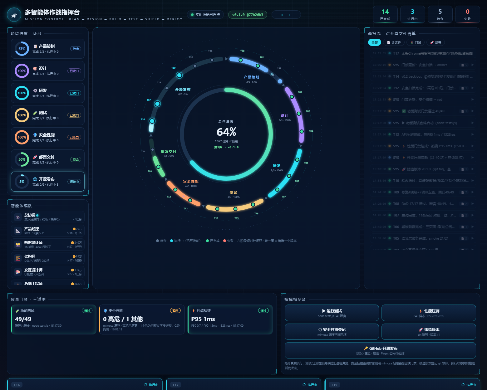

以指标为第一公民：语义层 DSL 取数、维度树下钻联动、服务端行级权限（RLS）裁剪、 五种同环比策略裁决，零后端即可完整体验。
🚀 进入交互体验站驾驶舱 / 主题看板 / 指标字典 / 任务控制台，四张实景截图




体验站与后端语义层逐位对账（黄金查询 6 组，容差 ±0.05）
16 个注册指标全部由元数据驱动渲染；请求只允许指标编码，禁止裸 SQL，语义层统一裁决口径。
省 → 市、门类 → 大类维度树下钻；filter:click 事件总线跨图联动，URL 终态可分享可回放。
X-Role 编译期注入 path 前缀谓词：leader 全量、prov-js / prov-gd 只见本省；越权返回空集不泄露。
direct / compare_then_compute / cumulative / snapshot / window_sum 五策略；累计禁环比自动 403。
设计方案与 MVP 全过程文档（仓库内 Markdown）
总体架构、语义层 / DSL / RLS / 同环比策略的完整设计说明。
MVP 范围、种子数据口径、演示叙事（预埋异常清单）。
/api/v1 端点、QueryRequest Schema、错误码与缓存键规则。
指标编码 / 原子字段族 / 维度树 / 角色绑定的冻结版字典。
三态渲染、红涨绿跌、联动信封与页面终态规则。
语义层冒烟与对账测试的执行记录与结论。
window.fetch，URL 含 /api/v1/ 的请求全部由内置查询引擎 api-shim.js 本地应答——
从 mvp/server/index.js 等价移植的 normalizeQuery / executeQuery / buildSql 语义，
叶子事实（市 × 大类 × 月）聚合上卷出省 / 全国值；事实数据为列式精简版 data/facts-lite.json（约 360KB）。